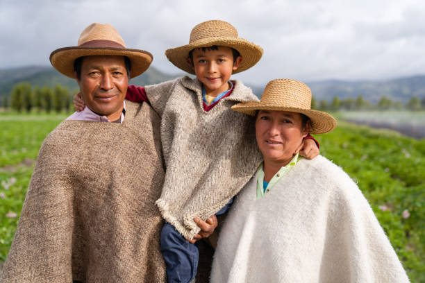
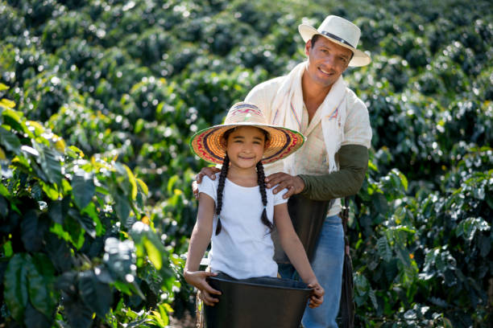

15 abr 2026 · comunicado
CNE entrega credenciales a los siete representantes a la Cámara del Atlántico
La sala plena del Consejo Nacional Electoral entregó las credenciales...
Leer más →Información oficial actualizada sobre el proceso electoral 2026. Descarga recursos para medios.
El simulacro se realizó con éxito, reforzando las garantías para el registro de los testigos electorales.
El aplicativo facilitará la vigilancia en los más de 127.000 puestos de votación distribuidos en todo el territorio nacional y en el exterior.
La sala plena del Consejo Nacional Electoral entregó las credenciales...
Leer más →
Nuevas acciones para garantizar la transparencia del proceso.
Leer más →
El Consejo Nacional Electoral resalta el trabajo mancomunado...
Leer más →
Testigos electorales fueron reconocidos en ceremonia oficial.
Leer más →
Reporte detallado del seguimiento al proceso de acreditación.
Leer más →Se realizó exitosamente el segundo simulacro nacional.
Leer más →